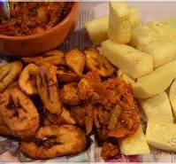
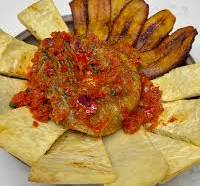

FRIED YAM
HOME

This is a crepsy, appetizing, delicious and an affordable Dish.
This is a very simple dish which isn't difficult to prepare but requires constant attention.
With this recipe the food can easily burn if not fried properly.
You can decide to either make it too dried or just normal.
The choice is yours.
NOW, Let's discuss the ingrediants and Recipe.
LIST OF INGREDIANTS
- Cooking Oil
- salt
- Peper, Tomatoes and Onions
- plaintain

The RECIPE
- Peel, wash and cut Yam into a boul of salty water
- Add drained salty yam into the hot oil to fry.
- Pay attention and stir every two minutes to avoid burning
- Take it out of the hot oil if well fried.
- Peel and cut plaintain into the salty water
- drain and Fry.
- Grind or blend the tomatoes, onoins and pepper.
- Then serve!!!
Enjoy your meal.
Have a wonderful day!!!